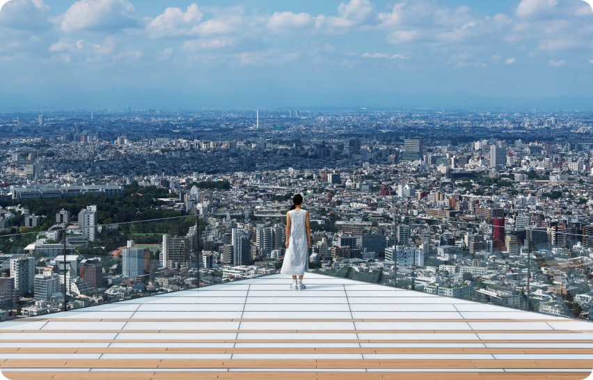

出典：SHIBUYA SKY公式サイト
SPOT 01
第1位: 空中庭園で過ごす最高のエモいマジックアワー
SHIBUYA SKY（渋谷スカイ）
9月限定の特別イベント「天空の夢回廊」が開催中！夕暮れ時に行って、ガラス張りの絶景コーナー「SKY EDGE」でシルエット写真を撮るのがいまのトレンドです。事前にWEB割チケットを購入すれば、学生でもお得に楽しめます。スマホの容量を空けてから行くのがおすすめ◎
- エリア：東京・渋谷（渋谷スクランブルスクエア）
- おすすめポイント：夕暮れ〜マジックアワーの「SKY EDGE」シルエット撮影・WEB割チケットあり